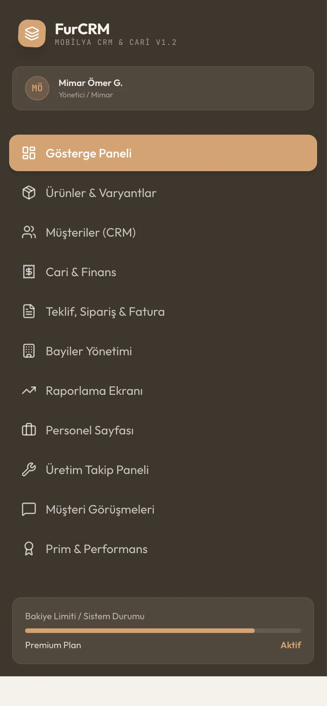

CRM + İç Operasyon Sistemi
Dağınık işleri
tek panelde yönetin.
Müşteri, teklif, görev ve rapor akışını işletmenize göre tasarlanmış ortak bir sistemde birleştirin.


01Müşteri
02Operasyon
03Rapor
Müşteri, teklif, görev ve rapor akışını işletmenize göre tasarlanmış ortak bir sistemde birleştirin.

Tekrarlanan bir süreci gönderin; hangi adımların sistemleştirilebileceğini ilk görüşmede netleştirelim.
Form, e-posta, CRM, bildirim ve rapor akışları birbiriyle konuştuğunda ekip aynı işi yeniden yapmaz.
Hazır kalıba göre değil, ekibin gerçek iş akışına göre şekillenen modüler yapı.
Kuralı belli, sık tekrarlanan ve farklı araçlar arasında taşınan işler iyi bir başlangıç noktasıdır.
Ekipler ayrı dosyalar tutmak yerine aynı güncel veriyi kendi ihtiyaçlarına göre görür.
İyi otomasyon yalnızca bir aracı bağlamaz; kuralı, kaydı ve hata durumunu da tanımlar.
Karar, özellik sayısından önce süreç uyumuna ve uzun vadeli sahip olma maliyetine dayanmalıdır.
Otomasyonun değeri, ekibin tekrar eden iş yerine karar ve müşteri deneyimine odaklanabilmesidir.